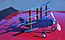
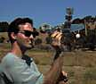
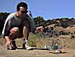
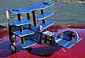

|     |
This delightful sport model is a WWI-esque quadruplane that Jason sketched up on a whim. Though single surfaced, it is otherwise a legal Embryo, meeting wing area and fuselage cross section requirements. With its 12" span it is a compact model that flies far better than one might first assume. It will chug about on a loop of 1/16", climb briskly on 1/8", or sky rocket on 3/16".
Despite most of the drag being far above the thrustline, it seems to take the imbalance in stride, climbing well under power, cruising stably, and smoothly gliding to a graceful landing on every flight. This model flys on the proverbial rails. Indeed, in a full day of flying, including many short hops for the camera, we only saw the nose drop in a stall once or twice, and that after retrimming to experiment with a different "sit" in the air. With never close to full winds, this model was doing minute flights as if they were warm up laps. Small bubbles of warm air stretched times toward two minutes repeatedly, and our courage ran out after a dramatic pool/roof/wire/tree dodging 3 minute 7 second marathon.
Jason's prototype has recently been joined in the air by my 6" version.
Do you want to see his winding technique?
Return to
Jason's Hangar | Marin Aero Club Gallery
Copyright 1998, Thayer Syme. All rights reserved